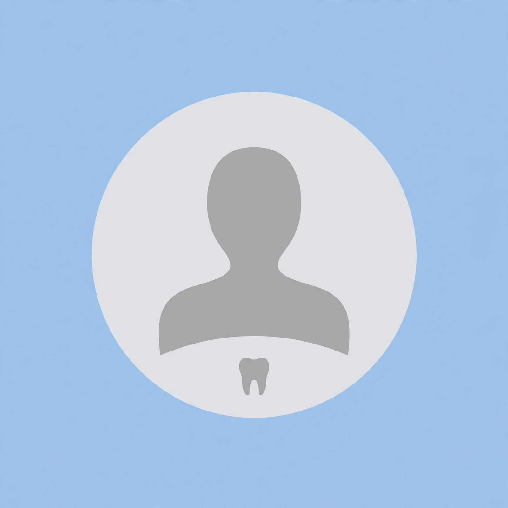

Otros - Sobre nosotros
Historia del Consultorio
El Consultorio Dental Santa Maria nació en Oruro con la idea de brindar atención odontológica cercana y accesible para las familias. Su objetivo es ofrecer un trato amable y explicar los procedimientos dentales para que cada paciente pueda comprender su tratamiento.
El consultorio ofrece información sobre diferentes servicios odontológicos, desde limpiezas y curaciones hasta tratamientos especializados. Esta página web permite a los pacientes conocer los servicios, consultar información y comunicarse con el consultorio.
El Consultorio Dental Santa Maria busca contribuir al cuidado de la salud bucal de la población de Oruro, ofreciendo orientación sobre la prevención de enfermedades dentales y la importancia de mantener hábitos adecuados de higiene.
La atención odontológica no consiste solamente en tratar problemas dentales, sino también en prevenirlos. Por ello, es importante que cada paciente conozca la manera correcta de cepillarse los dientes, cuide sus encías y acuda a controles odontológicos periódicos.
El consultorio procura brindar una atención basada en el respeto, la responsabilidad y la comunicación con sus pacientes. Explicar cada procedimiento y orientar sobre las alternativas disponibles ayuda a que las personas comprendan mejor el cuidado de su salud.
Como parte de su compromiso con la comunidad, la página web del consultorio funciona como un medio de información y comunicación. A través de ella, los visitantes pueden conocer los tratamientos, consultar los horarios, revisar las promociones disponibles y encontrar la ubicación del establecimiento.
De esta manera, el Consultorio Dental Santa Maria busca facilitar el acceso a información odontológica y promover una cultura de prevención, cuidado personal y responsabilidad con la salud bucal.
Calle Enrique Collazos y Av. Barrientos, Oruro, Bolivia.

Nuestro Dentista
Dr. Jorge Guzman
El profesional brinda atención odontológica y orienta a los pacientes sobre el cuidado de su salud bucal. La evaluación individual permite identificar las necesidades de cada persona y explicar las alternativas de tratamiento.
Su objetivo es que los pacientes reciban información clara y se sientan acompañados durante su atención dental.
Especialidades y tratamientos
- Ortodoncia: Corrección de la posición de los dientes y de la mordida mediante tratamientos y controles periódicos.
- Endodoncia: Tratamiento de conductos para atender problemas que afectan la parte interna del diente, según la evaluación profesional.
- Extracción dental: Extracción de piezas dentales cuando existe una indicación odontológica para retirarlas.
- Limpieza dental y cuidado de las encías: Eliminación de placa y sarro, limpieza dental e indicaciones para mantener una buena higiene bucal.
- Odontología infantil: Atención dental para niños, prevención de caries y orientación sobre higiene bucal de acuerdo con su edad.
- Blanqueamiento y estética dental: Evaluación y orientación sobre procedimientos para mejorar la apariencia de los dientes.
- Operatoria y restauraciones: Tratamiento de caries y restauración de piezas dentales con materiales adecuados para cada caso.
- Prótesis dentales: Orientación sobre alternativas de prótesis removibles o fijas, de acuerdo con la evaluación del profesional.
¿Dónde estamos?
Visítanos en el Consultorio Dental Santa Maria, ubicado en la ciudad de Oruro, Bolivia. Consulta nuestra ubicación en el mapa para encontrar el establecimiento y planificar tu visita.
Dirección:
Calle Enrique Collazos y Av. Barrientos,
Oruro, Bolivia.
Establecimiento:
Consultorio Dental Santa Maria
¿Cómo llegar?
Puedes abrir nuestra ubicación en Google Maps para consultar
el punto señalado y obtener indicaciones de ruta.
Encuéntranos en el mapa
Pulsa el botón para abrir Google Maps y consultar cómo llegar desde tu ubicación.